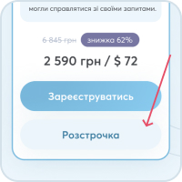
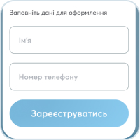

Психосоматика: твій
ключ до здоров'я

Вирішіть свій запит на курсі практичної психосоматики з глибинним опрацюванням до результату
Записатись- Точніше рентгена
- Дешевше за ліки
- Швидше за швидку допомогу
Що спільного у цих ситуаціях?
Є симптоми, але лікарі не можуть поставити діагноз
Постійний біль у спині, лікарі безсилі
Нещасливі стосунки як порочне коло
Грошей не вистачає, скільки не заробляй
Часті конфлікти і стреси на роботі
Алергія не піддається лікуванню
Почуття, що живеш не своїм життям
Це психосоматика - фізичний прояв психологічної причини.
І ви самі можете вирішити ці проблеми, виявивши та усунувши їх корінь.
Що дасть вам курс
«Психосоматика – ключ до здоров'я»
Задоволеність своїм життям
Вирішіть запит, з яким прийшли на курс: знайдете причину та приберете наслідки
Щасливі стосунки, здорову сім'ю
Знімете родові програми з себе, навчитися не вкладати їх у своїх дітей
Психологічне здоров'я
Опануйте психосоматику і навчитися самостійно працювати з усіма своїми запитами та емоціями
Фізіологічне здоров'я
Дізнаєтесь своє тіло з нового боку, навчитеся розуміти його підказки. Забудете про діагнози та купи таблеток
Впевненість у завтрашньому дні
По-новому погляньте на своє життя, зрозумієте, як керувати нею, а не підлаштовуватися під обставини
Гармонію у житті
Навчіться керувати негативними емоціями та конфліктами за допомогою ефективних технік
В основі курсу – метод
«Зцілення спогадом»
Recall Healing - це синтез навчань Карла Юнга, доктора Сабба і доктора Хаммера, творця Нової Німецької медицини, з 35-річним досвідом Ж.Рено в Натуральній медицині і 10-річним - в Натуропатії.
Методика полягає в тому, щоб виявити психологічний фактор, що впливає на життя, і опрацювати його так, щоб одужати та вирішити проблему.
Доктор наук (Канада)
6
головних результатів курсу
- Навчитеся дієвій методиці розв'язання своїх психосоматичних проблем
- Вивчите техніки вивантаження емоцій із тіла до того, як вони стали проблемою чи хворобою
- Навчитися знаходити відповіді про те, що саме з вами відбувається і чому
- Розберетеся в сигналах тіла і зрозумієте, як розум трансформує переживання в хворобу
- Дізнаєтеся, що таке циклічні історії чи чому ми «наступаємо на граблі»
Формат навчання
33 онлайн уроків по
20-30 хвилинЧітко і лаконічно про найголовніше. Ви завжди знайдете час, щоб їх подивитися
30 практичних завдань
За підсумками пройденого на уроках матеріалу, з перевіркою психологом - спеціалістом RH
4 онлайн зустрічей в Zoom
Від автора курсу, психолога Інни Артюшкіної
Особистий супровід
вашого навчання куратором-психологом
PDF-книги
з психосоматики та психології
Особистий кабінет
з усіма навчальними матеріалами
Загальний чат
з учасниками курсу для підтримки та мотивації
40 технік
ефективні та прості у використанні
План програми
1тиждень
1 тиждень
- Ціль:
Сформулювати правильно свій запит та знайти інструменти для роботи з ним.
- Зміст:
- Сформуємо ваш запит, визначимося з чим саме працюватимемо
- Аналіз ваших сфер життя. Формування плану дій із них Аналіз ваших сфер життя. Формування плану дій із них
- Емоції та їх вплив на організм. Як змінювати свій емоційний стан за 15 секунд
- Арт-терапія. Енергія та діагностика запиту. Розкриття творчого потенціалу Арт-терапія. Енергія та діагностика запиту. Розкриття творчого потенціалу
- Сила переконань. Як установки впливають на якість нашого життя. 5 технік роботи зі зміною переконань
- Техніки роботи з емоціями. Методики як керувати емоціями та знаходити справжню причину емоцій.
На пакеті «Швидка пігулка» доступні лише Урок №01 та №03
- Результат
Сформуєте правильно ваш запит
Підвищіть свою енергію завдяки звільненню від блоків
Виявіть негативні переконання, пропрацюєте та позбавтеся їх
Проаналізуєте сфери вашого життя, складіть план дій зі слабких напрямків
Навчіться працювати зі своїми негативними емоціями, опануйте ефективні техніки роботи з ними
Навчіться методиці розшифровки снів, навчитеся знаходити в них підказки, зрозумієте чому важливо звертати увагу на сни в період роботи із запитом
- Додаткові матеріали:
- 40 технік
- 5 книг
- Робочий зошит
2тиждень
2 тиждень
- Ціль:
Рішення вашого запиту, вивчення алгоритмів та інструментів для вирішення будь-якого запиту, що виник у вашому житті.
- Зміст:
- Робота зі страхами. Техніки прийняття страхів. Як самостійно впоратися зі страхами
- Генеалогічне дерево. Чому важливо знати свій рід
- Зародження хвороб. Як «застряглі» у тілі емоції впливають на наше здоров'я
- Тимчасова лінія. Робота з періодами життя як алгоритм вирішення конфлікту
- Я + чоловік. Як взаємозв'язок із батьком (навіть якщо жили без батька) впливають на вибір чоловіка
- Я й батьки. Роль батьків у нашому житті. Як знайти та змінити переконання, закладені батьками
- Психосоматика критичних станів Бездіяльність – як результат шоку. Стан тіла після шокових подій
- Візуалізація мети. Техніки, які допоможуть знайти для вас легший і правильніший шлях вирішення вашого запиту
- Що таке психосоматика. Як зрозуміти, що у вас є психосоматика. Взаємозв'язок психоемоційного стану із нашим тілом
- Сум, як вийти з цього стану
На пакеті «Швидка пігулка» доступні лише теми №3, №4 та №9
- Результат
Разом з нами ви вирішите свій запит, отримаєте алгоритми та інструменти для вирішення будь-якого запиту, що виник у вашому житті, а також дітей та ваших близьких
Вирішите негармонійні стосунки з батьками та сім'єю
Навчіться працювати з вашим станом: знаходити першопричини негативних емоцій
Ви отримаєте методики визначення причин виникнення хвороб, шокових подій, негативних станів.
Поміняєте взаємини із чоловіками
- Додаткові матеріали:
- 40 технік
- 5 книг
- Робочий зошит
3тиждень
3 тиждень
- Ціль:
Сформулювати правильно свій запит та знайти інструменти для роботи з ним.
- Зміст:
- Сформуємо ваш запит, визначимося з чим саме працюватимемо
- Аналіз ваших сфер життя. Формування плану дій із них Аналіз ваших сфер життя. Формування плану дій із них
- Емоції та їх вплив на організм. Як змінювати свій емоційний стан за 15 секунд
- Арт-терапія. Енергія та діагностика запиту. Розкриття творчого потенціалу Арт-терапія. Енергія та діагностика запиту. Розкриття творчого потенціалу
- Сила переконань. Як установки впливають на якість нашого життя. 5 технік роботи зі зміною переконань
- Техніки роботи з емоціями. Методики як керувати емоціями та знаходити справжню причину емоцій.
На пакеті «Швидка пігулка» доступні лише Урок №01 та №03
- Результат
Сформуєте правильно ваш запит
Підвищіть свою енергію завдяки звільненню від блоків
Виявіть негативні переконання, пропрацюєте та позбавтеся їх
Проаналізуєте сфери вашого життя, складіть план дій зі слабких напрямків
Навчіться працювати зі своїми негативними емоціями, опануйте ефективні техніки роботи з ними
Навчіться методиці розшифровки снів, навчитеся знаходити в них підказки, зрозумієте чому важливо звертати увагу на сни в період роботи із запитом
- Додаткові матеріали:
- 40 технік
- 5 книг
- Робочий зошит
283 клієнти вже вирішили свої запити на курсі за 11 потоків
Подивіться, які запити вирішили завдяки курсу «Психосоматика – ключ до здоров'я»
- астма
- мігрені
- гіпертонії
- хвороби суглобів
- панічні атаки
- хвороби ШКТ
- безпліддя
- ендометріоз
- варикоз
- заїкуватість, дислексія у дітей
- шкірні захворювання
- депресії
- Проблеми з зором
- нещасливі стосунки
- постійні алергії
- травми, переломи, нещасні випадки
- безгрошів'я
- смерті близьких
- проблеми з хребтом
- травмуючі події
- фізичне чи сексуальне насильство
- повторювані історії
- набір симптомів без діагнозу
Обирайте пакет участі
Вищий пілотаж з Інною Арт
VIPзнижка 70%7 500 грн / $ 208- 33 лекції
- 40 технік
- Особистий кабінет
- 6 прямих ефірів
- Конспект 30 лекцій
- Тривалість курсу 5 тижнів
- Доступ до уроків буде дійсний 6 місяців
- 5 електронні книги у подарунок
- Розширений робочий зошит
- Домашні завдання, які спрямовані на рішення саме твого запиту з інструкцією, як їх виконувати
- Перевірка домашніх завдань, щоб визначити у правильному напрямку ти рухаєшся
- Куратор Інна Артюшкіна - вона особисто супроводжуватиме тебе під час курсу
Бонус: супровід та відповіді на запитання ще місяць після закінчення курсу, відпрацювання навичок роботи з емоцією в моменті та інших технік з курсу
Якщо ви хочете отримати індивідуальний супровід та навчання від Інни Артюшкіної, яка навчалася у найкращих докторів наук із психосоматики – це ваш пакет!
25 218 грнзнижка 70%7 500 грн / $ 208Найкращий вибір
Глибинне опрацювання
Optimalзнижка 70%2 590 грн / $ 72- 33 лекції
- 40 технік
- Особистий кабінет
- 6 прямих ефірів
- Конспект 30 лекцій
- Тривалість курсу 5 тижнів
- Доступ до уроків буде дійсний 6 місяців
- 5 електронні книги у подарунок
- Розширений робочий зошит
- Домашні завдання, які спрямовані на рішення саме твого запиту з інструкцією, як їх виконувати
- Перевірка домашніх завдань, щоб визначити у правильному напрямку ти рухаєшся
- Куратор-психолог, який обов'язково доведе тебе до вирішення питання
- Загальний чат з учасниками та куратором-психологом
Якщо вам потрібне глибинне опрацювання вашого запиту, опрацювання питання батьків, занурення у ваші емоції та вміння з ними працювати, вибирайте цей пакет. Цей пакет направлений на повне оновлення. І навчання вас методики, для того щоб ви самостійно могли справлятися зі своїми запитами.
6 845 грнзнижка 62%2 590 грн / $ 72Швидка пігулка
Quicklyзнижка 70%7 500 грн / $ 208- 5 лекцій
- 7 технік
- Особистий кабінет
- 2 прямих ефірів
- Конспект 7 лекцій
- Тривалість курсу 1.5 тижнів
- Доступ до уроків буде дійсний 6 місяців
- 2 електронні книги у подарунок
- Стиснутий робочий зошит
- Домашні завдання, які спрямовані на рішення саме твого запиту з інструкцією, як їх виконувати
- Перевірка домашніх завдань, щоб визначити у правильному напрямку ти рухаєшся
- Куратор-психолог, який обов'язково доведе тебе до вирішення питання
Якщо ви хочете швидко вирішити своє питання без глибокого занурення в психосоматику це ваш пакет! Ви отримаєте доступ лише до 7 уроків, які спрямовані на швидке вирішення одного запиту.
2 520 грнзнижка 41%1 490 грн / $ 41
Як оформити розстрочку?
Ти можеш керувати своїм життям, а не підкорятися обставинам. Створи гармонію між тілом і розумом.
1 крок
Виберіть відповідний пакет та натисніть «Розстрочка»
2 крок
Заповніть поля та введіть свої дані
3 крок
На екрані платіжної системи натисніть “У розстрочку” та оберіть банк, послугами якого ви користуєтесь
4 крок
Слідкуйте за вказівками на цій сторінці щодо оформлення розстрочки в обраному банку
Виникли питання?
Залиште свої дані і ми вас проконсультуємо
Ви точно впораєтеся тому що
У мене дуже складний запит
Дуже багато учасників курсу думають, що їхні запити надто складні та заплутані. І ще не було тих, кому ми не допомогли б вирішити внутрішній конфлі кт, запит. Методика нашої роботи з вашим тілом є універсальною і допомагає розплутати будь-яку історію, навіть якщо вона здається дуже заплутаною.
А раптом це не спрацює в мене?
Дуже багато учасників курсу думають, що їхні запити надто складні та заплутані. І ще не було тих, кому ми не допомогли б вирішити внутрішній конфлі кт, запит. Методика нашої роботи з вашим тілом є універсальною і допомагає розплутати будь-яку історію, навіть якщо вона здається дуже заплутаною.
Мені так погано, що нічого не хочу
Дуже багато учасників курсу думають, що їхні запити надто складні та заплутані. І ще не було тих, кому ми не допомогли б вирішити внутрішній конфлі кт, запит. Методика нашої роботи з вашим тілом є універсальною і допомагає розплутати будь-яку історію, навіть якщо вона здається дуже заплутаною.
Грошей на життя не вистачає, тим більше на курс
Дуже багато учасників курсу думають, що їхні запити надто складні та заплутані. І ще не було тих, кому ми не допомогли б вирішити внутрішній конфлі кт, запит. Методика нашої роботи з вашим тілом є універсальною і допомагає розплутати будь-яку історію, навіть якщо вона здається дуже заплутаною.
Мені лікарі не можуть допомогти, куди вже є психосоматикою
Дуже багато учасників курсу думають, що їхні запити надто складні та заплутані. І ще не було тих, кому ми не допомогли б вирішити внутрішній конфлі кт, запит. Методика нашої роботи з вашим тілом є універсальною і допомагає розплутати будь-яку історію, навіть якщо вона здається дуже заплутаною.
Мені страшно копатися у підсвідомості
Дуже багато учасників курсу думають, що їхні запити надто складні та заплутані. І ще не було тих, кому ми не допомогли б вирішити внутрішній конфлі кт, запит. Методика нашої роботи з вашим тілом є універсальною і допомагає розплутати будь-яку історію, навіть якщо вона здається дуже заплутаною.
Вирішити стій запит
Наші переконання, програми та родові сценарії зумовлюють наше життя. Прекрасна новина в тому, що ми можемо це змінити, головне щоб були знання та дієві інструменти, як це зробити. На курсі ви освоїте конкретну методику роботи з програмами та переконаннями.
Вирішити свій запит
Відгуки
Дивитись відео-відгук